Tree Graphs
If a graph is both connected and has no cycles, then it is a tree graph (Benjamin et al. 2017, 68). Recall from ?@sec-cycles in ?@sec-indirect, that a cycle is a path (as defined in ?@sec-paths) that begins and ends with the same node. Thus, in a tree graph, you can never start with a node and trace a sequence of distinct edges and nodes that take you back to the node you started with!
Figure 1 (a) shows a tree graph with ten nodes.
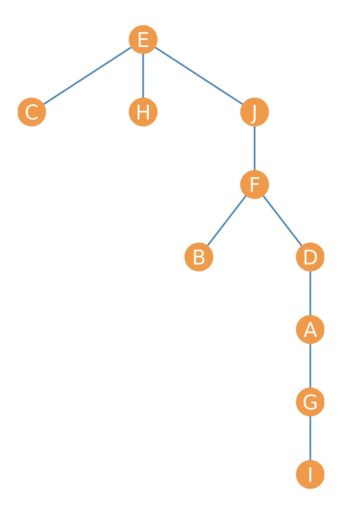
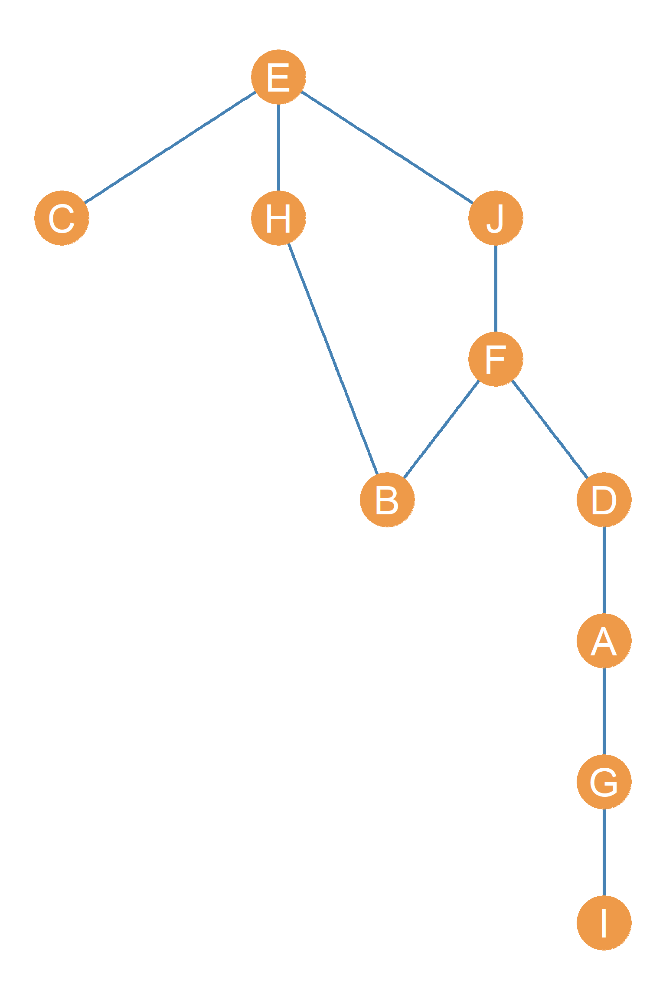
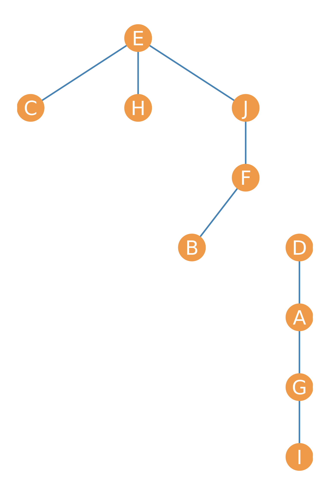
We already defined tree graphs as connected graphs with no cycles. This means that if we were to add a single link connecting any pair of nodes to a tree graph (like the one shown in Figure 1 (a)), it would create a cycle (of some length), and thus the graph would no longer be a tree!
For instance, Figure 1 (b) is just like Figure 1 (a), except we added the \(\{BH\}\) edge. Note that after doing this we have created the \(BFJEHB\) cycle (a cycle of length five), and thus Figure 1 (b) no longer qualifies as a tree graph. So one property of tree graphs goes like this: A graph is a tree graph if adding a single edge creates a cycle of some length.
Tree Graph Metrics
Tree graphs have another interesting property. The number of edges of a tree graph \(m\) is always equal to the number of nodes \(n\) minus one. Thus, if a graph is a tree graph or order ten, we know it must contain nine edges (it must be of size nine). For instance, in Figure 1, there are exactly nine edges (count them).
In equation form, if \(G(n, m)\) is a tree graph, then:
\[ m = n - 1 \tag{1}\]
Using simple algebra, we can also solve for the order of a tree graph if we know the size:
\[ n = m + 1 \tag{2}\]
This equation states that the order of a tree graph equals the number of edges plus 1.
Tree Graph Sum of Degrees
Note that, from ?@eq-sumki in ?@sec-degsum, the sum of the degrees of an undirected graph equals twice the number of edges (\(2m\)). Applying this reasoning, we can see that there should be a special formula for the sum of degrees of an undirected tree graph.
The reason is that if we know that:
\[ \sum_i k_i = 2m \tag{3}\]
And we also know that \(m = n - 1\) as per Equation 1, then substituting for \(m\) in Equation 4, gives us:
\[ \sum_i k_i = 2(n-1) = 2n - 2 \tag{4}\]
Thus, in a tree graph, the sum of degrees will always equal twice the number of nodes minus two!
Tree Graph Density
Remember from ?@sec-graphmetrics, that the density of an undirected graph is given by:
\[ d(G)^u=\frac{2m}{n(n-1)} \tag{5}\]
But since in a tree graph, \(m = n- 1\), the Equation 5 turns into:
\[ d(T)=\frac{2(n-1)}{n(n-1)} = \frac{2}{n} \tag{6}\]
So in a tree graph, the density is always equal to two divided by the number of nodes!
So if someone were to ask you, what’s the density of the graph in Figure 1 (a), you could immediately answer by knowing that the number of nodes is ten: \(d = 2 \div 10 = 0.2\).
Tree Graph Average Degree
Recall from ?@sec-graphmetrics that the graph average degree is just the sum of degrees divided by the number of nodes. But we already know that in a tree graph, the sum of degrees is equal to \(2n - 2\), so that means that the average degree of a tree graph is always equal to:
\[ \bar{k} = \frac{2n - 2}{n} \tag{7}\]
So without even looking at the the graph’s degree sequence and summing each number, I know that the average degree of Figure 1 has to be equal to \([(2 \times 10) - 2] \div 10 = (20 - 2) \div 10 = 18 \div 10 = 1.8\). Neat!
Path and Connectivity Tree Graph Properties
Tree graphs have four other unique properties.
- If \(G\) is a tree graph, then every node \(V\) in \(G\) is linked to every other node via a single path.
- The one path connecting each pair of nodes is unique, that is, a sequence of nodes and edges that is distinctive for that node pair and does not repeat for any other pair.
- Removing even a single edge of a tree graph disconnects the graph. Every edge of a tree graph thus counts as a bridge as discussed in ?@sec-indirect.
- Following (3), if we disconnect a tree graph by removing an edge, the resulting connected components are also trees.
We can verify properties (1) and (2) by examining Figure 1 (a). There’s only one path connecting nodes \(A\) and \(E\), and that’s \(\{AD, DF, FJ, JE\}\). In the same way, there’s only one path connecting \(A\) and \(C\), and that’s \(\{AD, DF, FJ, JE, EC\}\). Both of those paths are unique.
We can check property (3) by imagining the removal of a single edge from any of the graph shown in Figure 1 (a). You can verify that this would indeed disconnect that graph.
For instance, Figure 1 (c) is just the same as Figure 1 (a), except that we have removed the \(\{DF\}\) edge. As you can see, the graph is indeed now split into two components.
This last thing means that every edge in a tree graph is a bridge as defined in ?@sec-graphconnectivity. Note that when we disconnect a tree graph by removing an edge (as in Figure 1 (c)) then the resulting two components are also tree graphs!
Another way of saying the last thing is that trees are minimally connected graphs. That is, they are connected graphs that are connected using the smallest possible number of edges that we can use to connect a graph with that number of nodes. We will in a bit that this property allows us to define a new graph metric called the graph efficiency.
A disconnected graph whose components are also trees is called (you guessed it) a forest. Figure 1 (c) is a forest with ten nodes. The giant component of the forest in Figure 1 (c) contains six nodes \(\{B, C, E, F, H, J\}\) and the smaller component (a line graph as defined below) contains the other four nodes \(\{A, D, G, I\}\)
Special Types of Tree Graphs
As Figure 2 shows, tree graphs come in different configurations, some of which are of particular note.
The Line Graph
Note, for instance, that Figure 2 (a) is just a straight path between two nodes. This graph is a tree because it is connected and has no cycles. A graph like Figure 2 (a), which is just a single long path with some set of nodes, is also called the line graph. Line graphs are distinguished by their order and can be referred to as \(L_n\), where \(n\) is the number of nodes. Thus, \(L_5\) is the line graph shown in Figure 2 (a); a line graph with five nodes.
What are line graphs useful for? Well, they can be used to model the social phenomenon known as the “telephone game.” We can set up people in a line graph in a laboratory, have nodes pass a message, a piece of gossip, or a story along the line, and see how different the original message relayed by \(A\) is by the time it gets to \(E\). Obviously, the longer the number of edges in the line, the more distortion we should expect at the other end.
The Star Graph
Note also the graph that is just a central node connected to all the other end-point nodes, which are not themselves connected to one another; for example, Figure 2 (b) also counts as a tree. This graph is sometimes called the star graph. As with line graphs, we can refer to star graphs by a letter and a number indicating their order, such as \(S_n\). Thus, \(S_7\) is the star graph with seven nodes as in Figure 2 (b).
Star graphs are useful for modeling centralized systems, such as the airport network we saw in ?@sec-networks. Such hub-spoke systems feature a central node (the hub) connected to a bunch of end-point nodes not connected to one another (the spokes), as when a big airport (like LAX) sends flights to smaller regional airports. In this system, LAX is the “hub” at the center of the star, and the smaller airports are the “spokes” at the end.
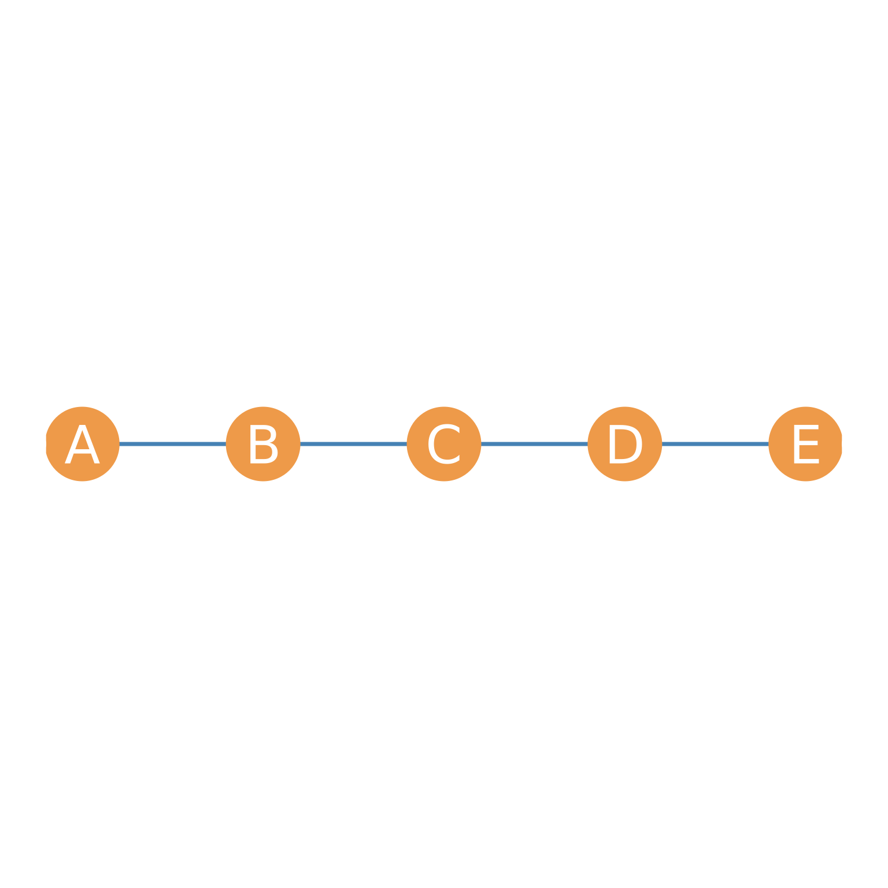
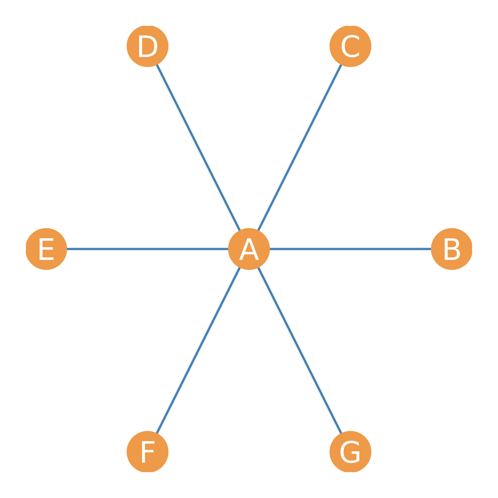
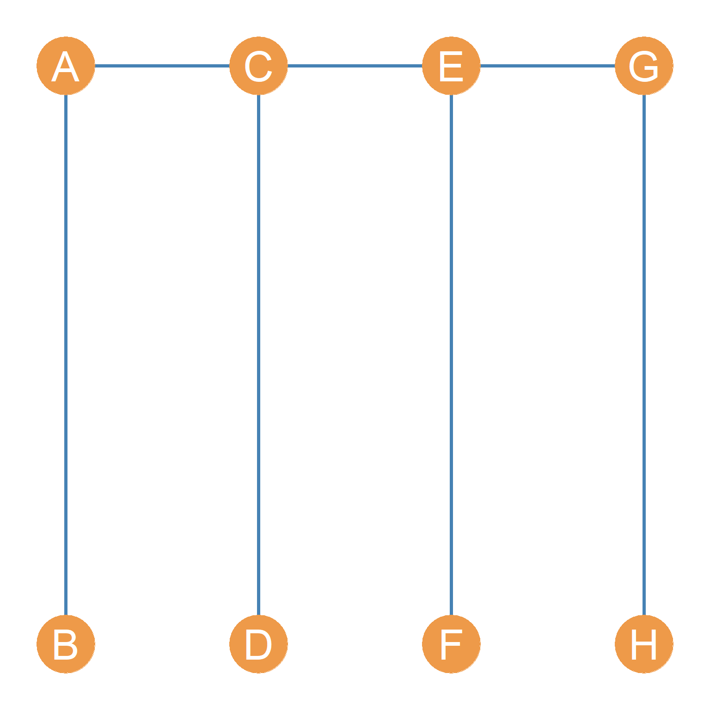
Caterpillar Graphs
Tree graphs with an even number of nodes can sometimes be drawn like the ones in Figure 2 (c). This is a line graph on top, with edges sticking out of each node, connecting to an equal number of endpoint or pendant nodes (half of the other nodes in the graph).
Because of the shape they form, these tree graphs are sometimes called caterpillar graphs, with the line graph at the top playing the role of the caterpillar’s “body” and the edges incident to the end point pendant nodes playing the role of the “legs.” Figure 2 (c) is a caterpillar graph of order eight.
The Graph Efficiency
Using some of the properties of tree graphs mentioned above, Krackhardt (1994) proposes a measure for how economical the connectivity of a given graph is called the graph efficiency \(F(G)\).
According to Krackhardt, a graph is efficiently connected if its connectivity is accomplished using the minimum possible number of edges. Thus, a tree graph is a maximally efficient graph \(F(G) = 1.0\). The idea is then to compare an observed graph with a tree of the same order and see how closely it resembles it.
Krackhardt proposes the following formula to compute the efficiency of a graph:
\[ F(G) = 1 - \left[\frac{2(m - n + 1)}{(n-1)(n-2)}\right] \tag{8}\]
Where \(m\) is the number of edges and \(n\) is the number of nodes. Note that when the graph \(G\) is a tree, the graph \(m = n - 1\). This means that the numerator of Equation 8 turns into: \(2(n - 1 -n + 1) = 2 \times 0 = 0\). This means the whole fraction on the right side of Equation 8 is zero, and \(1 - 0 = 1.0\), which is maximum efficiency.
As the graph deviates from that by having more edges than a tree, then the fraction on the right side of Equation 8 turns into a number that approaches 1.0, which means that the efficiency becomes smaller when we subtract that number from 1.
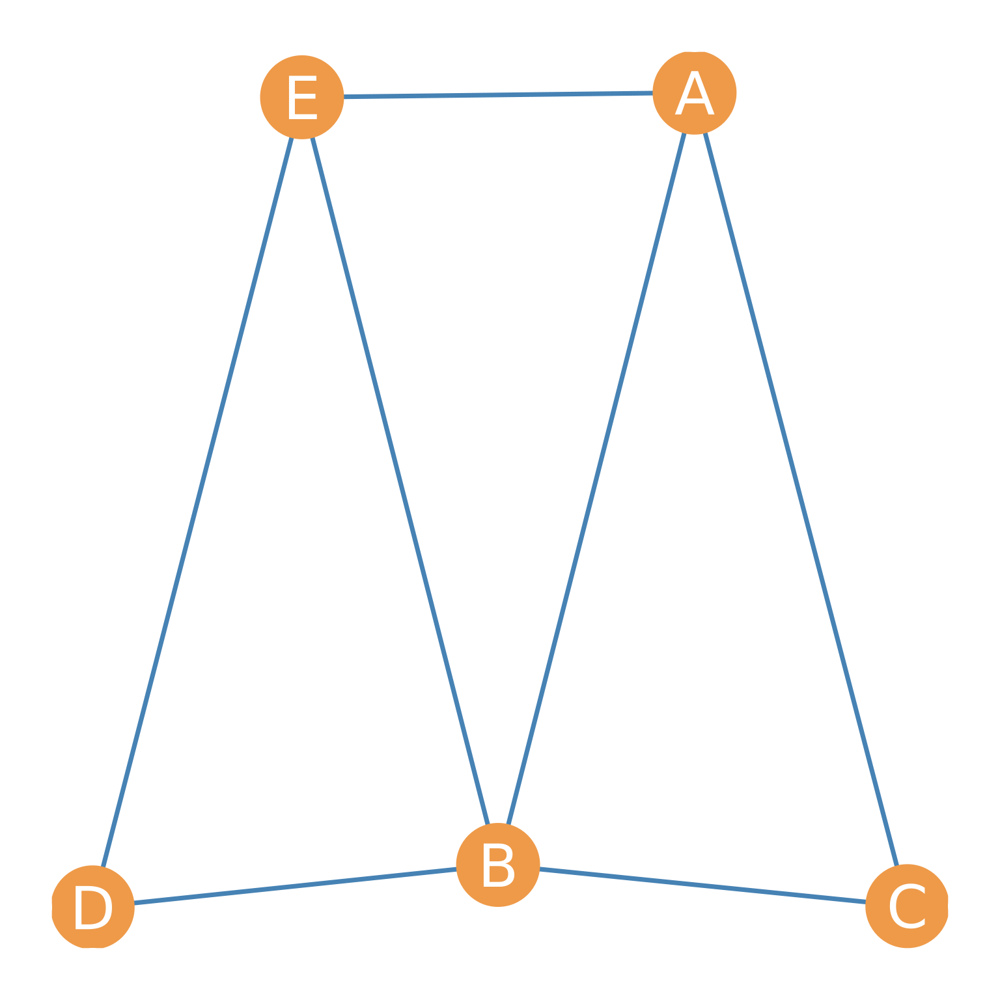
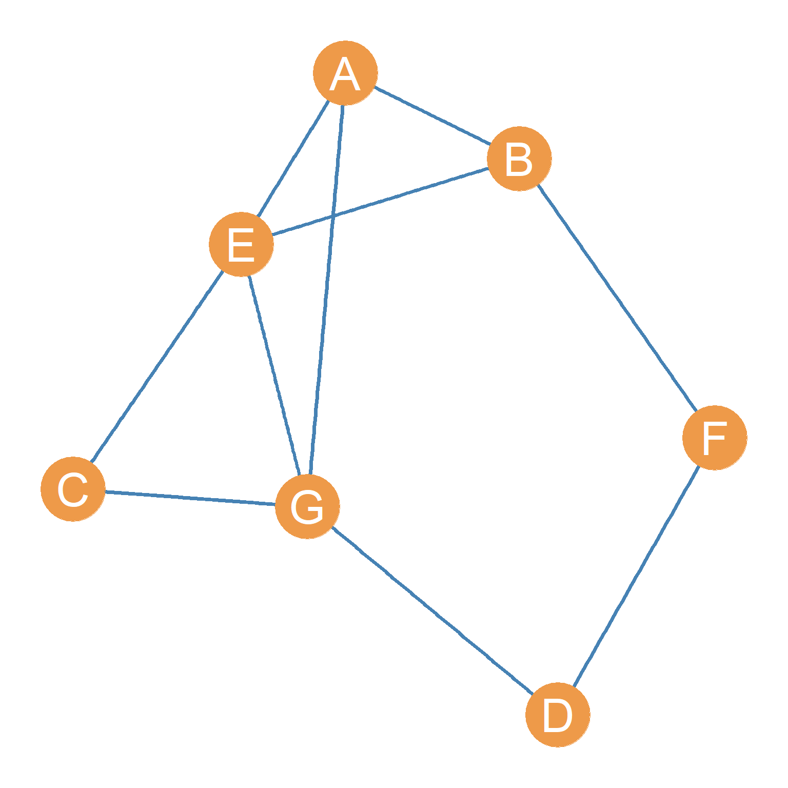
Let’s consider an example. Of the two graphs shown in Figure 3, which is the one that’s most efficiently connected? Well, the graph in Figure 3 (a) has five nodes and seven edges, which means that its efficiency is equal to:
\[ 1 - \left[\frac{2(7 - 5 + 1)}{(5-1)(5-2)}\right] = 1 - \left[\frac{2(2 + 1)}{4 \times 3}\right] = \]
\[ 1 - \left[\frac{2 \times 3}{12}\right] = 1 - \left[\frac{6}{12}\right] = 1 - 0.5 = 0.5 \]
The graph in Figure 3 (b), on the other hand, has seven nodes and ten edges, which means that its efficiency is equal to:
\[ 1 - \left[\frac{2(10 - 7 + 1)}{(7-1)(7-2)}\right] = 1 - \left[\frac{2(3 + 1)}{6 \times 5}\right] = \]
\[ 1 - \left[\frac{2 \times 4}{30}\right] = 1 - \left[\frac{8}{30}\right] = 1 - 0.27 = 0.73 \]
So it looks like the graph in Figure 3 (b) is more efficiently connected than the one shown in Figure 3 (a)!
Note also that the complete graph of any order is maximally inefficient according to Equation 8. For instance, we know from ?@sec-graphmetrics that the complete undirected graph of order five has to have \(5(5-1) \div 2\) edges (the graph maximum size), which is equal to \((5 \times 4) \div 2 = 10\).
So when we substitute these numbers into Equation 8, we get:
\[ 1 - \left[\frac{2(10 - 5 + 1)}{(5-1)(5-2)}\right] = 1 - \left[\frac{2(5 + 1)}{4 \times 3}\right] = \]
\[ 1 - \left[\frac{2 \times 6}{12}\right] = 1 - \left[\frac{12}{12}\right] = 1 - 1 = 0 \]
Showing that the complete graph is minimally efficient!
Spanning Trees
A connected subgraph of a larger graph (see ?@sec-subgraphs) that contains every node of the original graph but that is also a tree graph as defined earlier, is called a spanning tree of the original graph.
Figure 4 (a) shows a standard undirected graph with order six and size eleven (six nodes eleven edges). Obviously that graph is not a tree, as it contains many, many cycles (e.g., AEDA, FBEDF, BAECB, etc.). However, by deleting the edges that form those cycles we can create a tree graph that keeps everyone connected but pares down the number of edges from the original eleven to the \(n - 1 = 6 - 1 = 5\) we need to create a tree from the original graph.
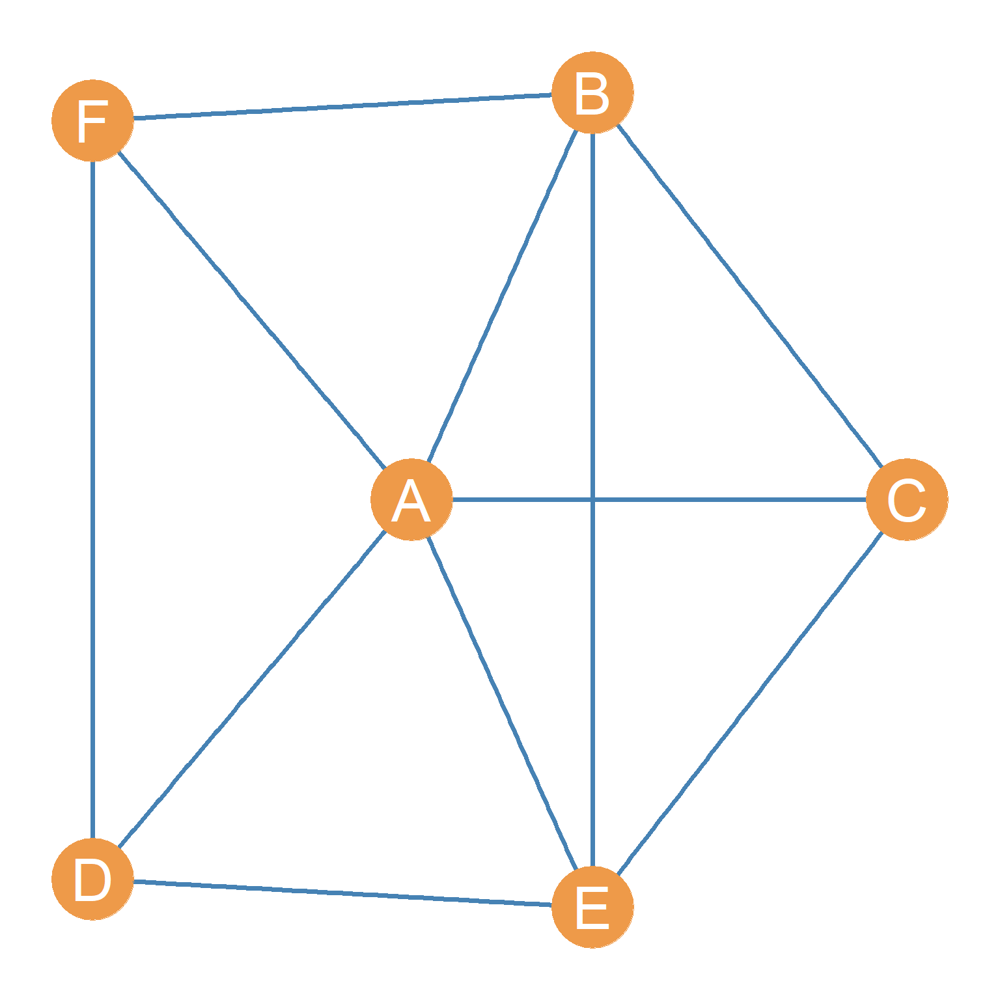
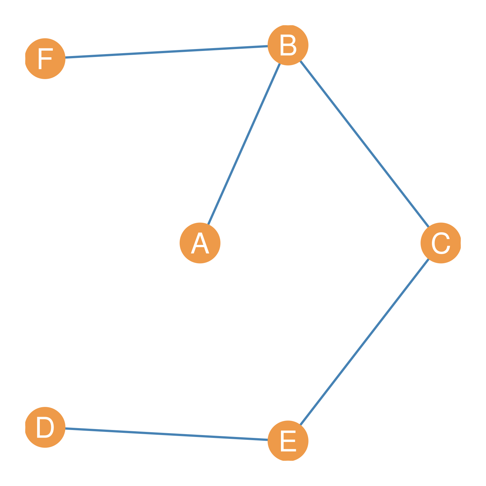
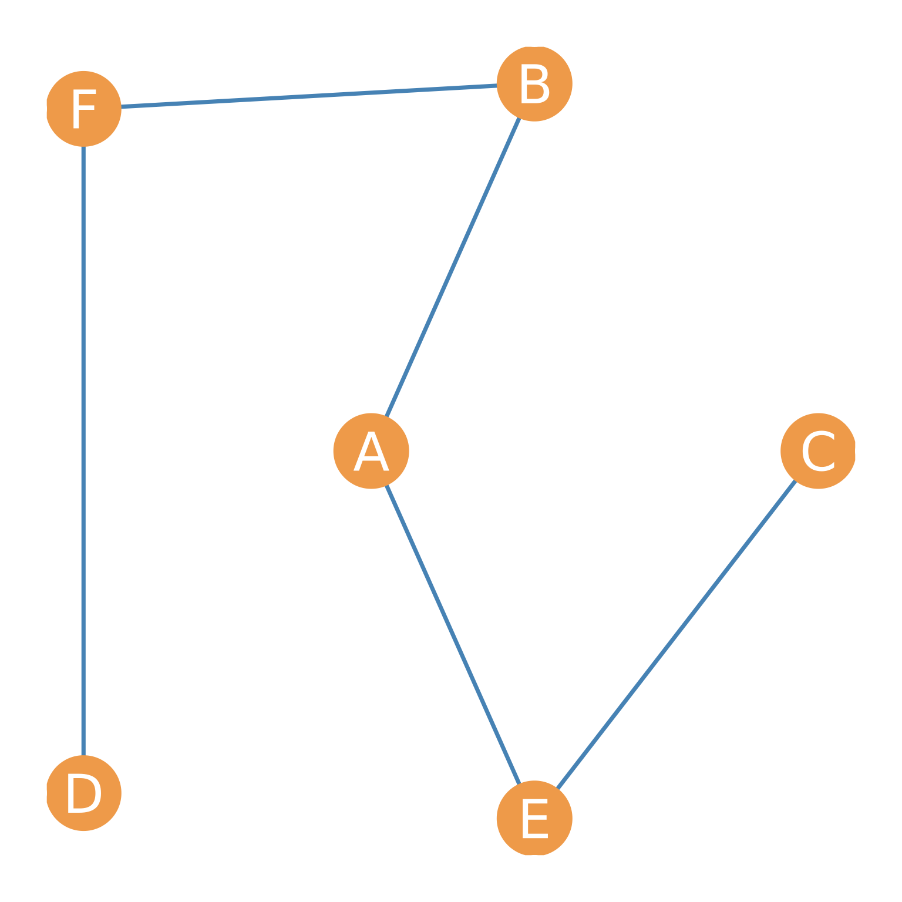
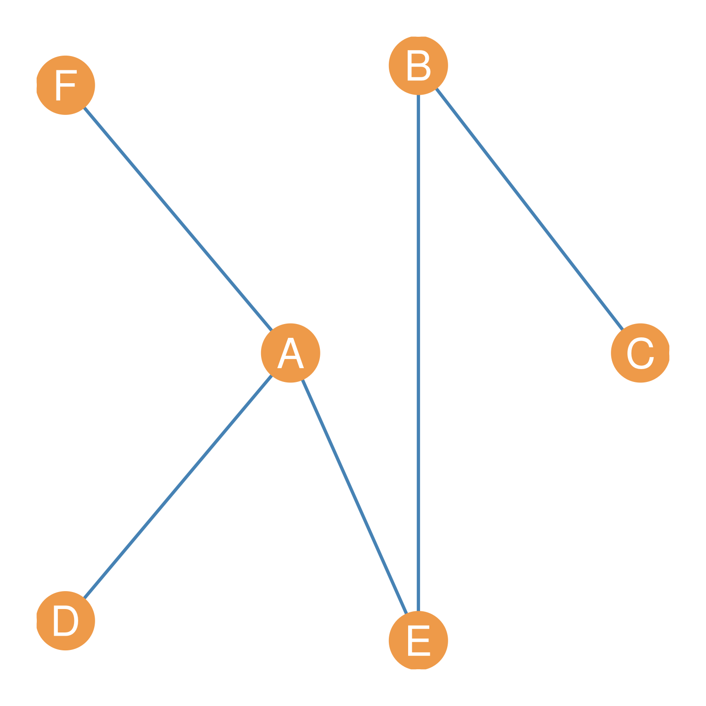
Such a spanning tree obtained by edge deletion from Figure 4 (a) is shown in Figure 4 (b). We can see that Figure 4 (b) is just an edge-deleted subgraph (see ?@sec-subgraphs) of Figure 4 (a) obtained by deleting the \(\{AF, DF, AD, AE, AC, BE\}\) edges.
Generally, there will be multiple ways of obtaining a spanning tree from a graph via edge deletion that results in different spanning trees. For instance, Figure 4 (c) is another spanning tree obtained from Figure 4 (a), obtained by deleting the \(\{AF, AD,AC, BE, BC, DE\}\) from the original. Figure 4 (d) shows yet another spanning tree obtained from Figure 4 (a).
Note that the three graphs in Figure 4 (b), Figure 4 (c), and Figure 4 (d) all count as tree graphs. They all have five edges (as we would expect a tree graph with six nodes to have), all of the edges are bridges (removing one would disconnect the graph), and adding just one more edge would create a cycle.